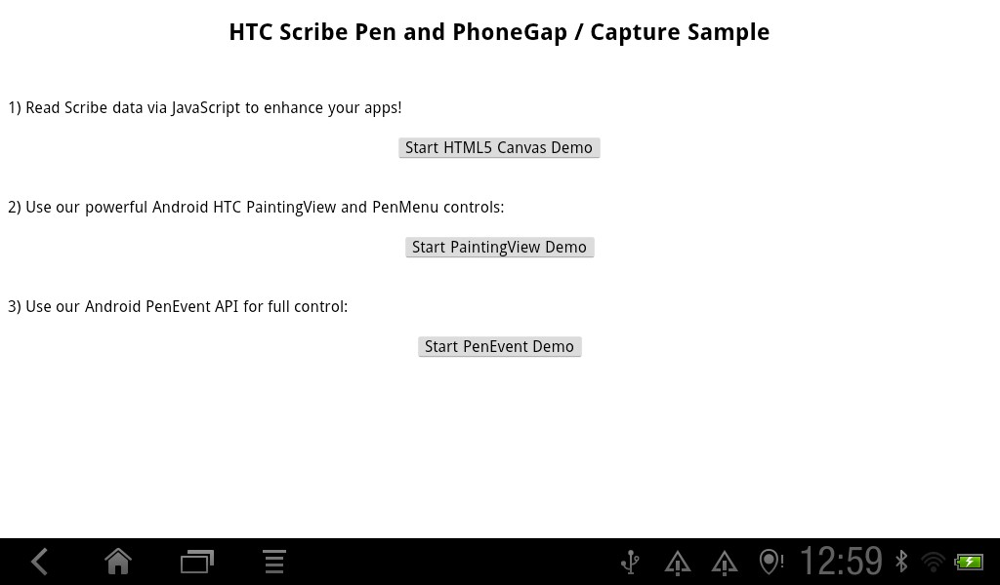
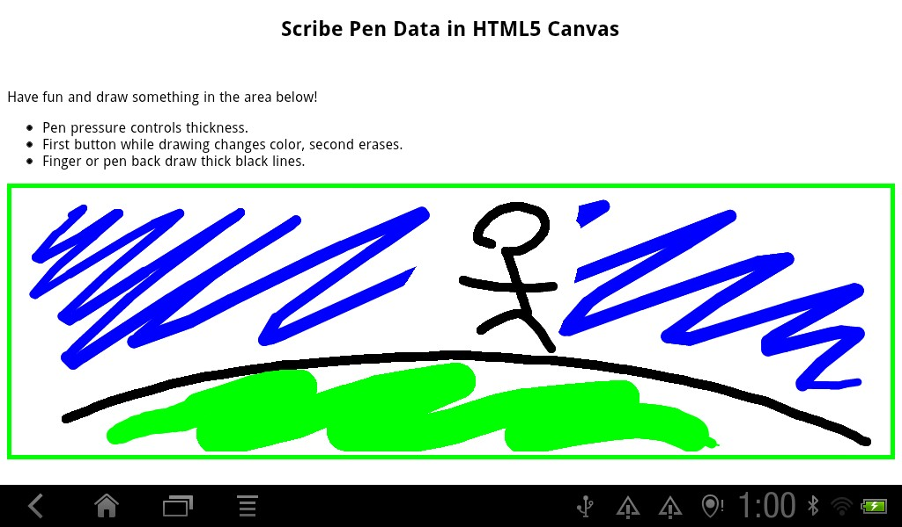
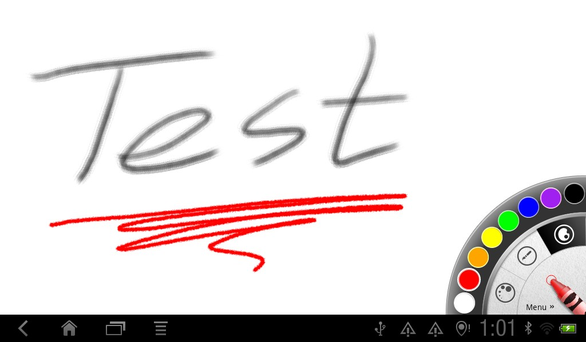
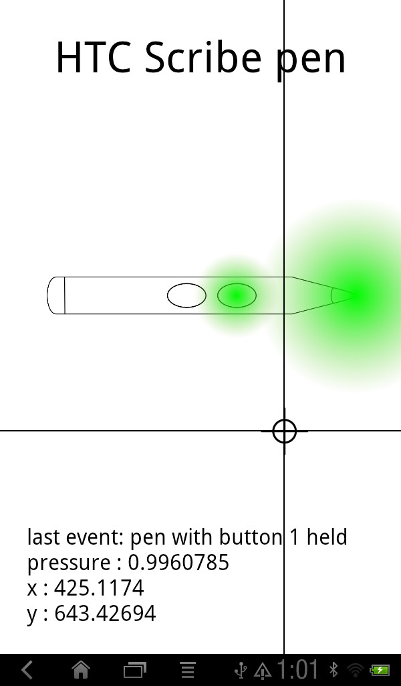
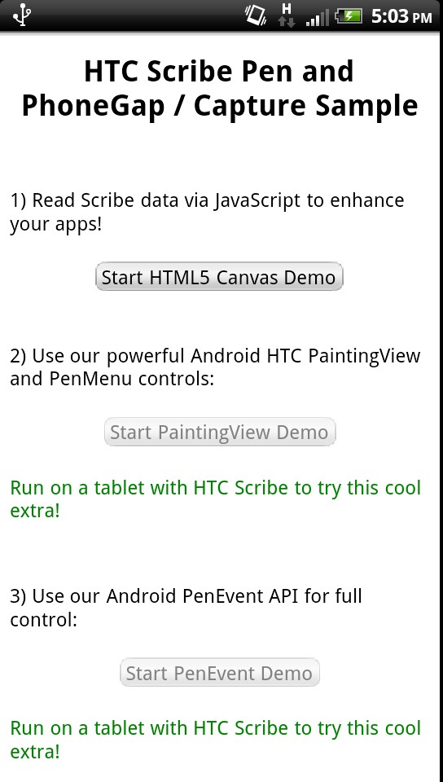
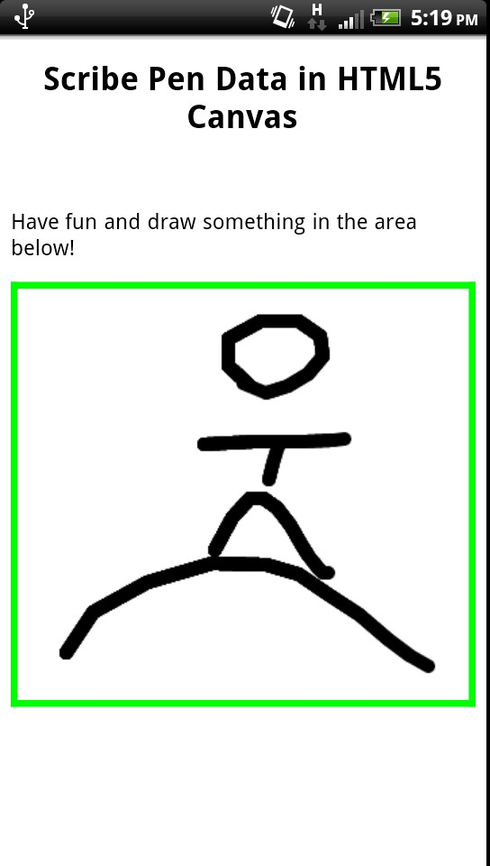

This sample code demonstrates using the HTC Scribe pen with the Phone Gap, now called Capture. Capture is a cross platform app development framework where developers write their apps in HTML and JavaScript. In this sample a plugin is used to provide Java code that runs only when the app is being run on Android devices. JavaScript in the Capture app can call the plugin to perform these functions:
2) is useful for augmenting an existing Capture app to use pen input data as a shortcut. For example, pressure of the pen can be used to determine the thickness of a line. 3) uses the OpenSense SDK's low level pen event API to read data in a Java program. This approach is the most powerful, because you have access to all Android functionality, and determine the response to every piece of data sent from the pen. 4) Uses components the SDK provides, already written, for rich painting capability using the pen. It allows implementing painting, mark up, and signature applications quickly.
The CaptureScribePlugin Eclipse project in the ZIP file is a PhoneGap plugin that provides JavaScript APIs for the above functions. The CaptureScribeSample Eclipse project is an example PhoneGap app that uses the above plugin. The first button in the app starts an HTML5 Canvas element that uses JavaScript to allow painting. It reads in HTC Scribe pen data when available to augment the drawing experience, allowing the first button on the pen to change the color of the line being drawn, for example. The next two buttons launch native Java code designed to run only on devices with the OpenSense SDK. When run on a different device, like a phone, the buttons are disabled by JavaScript code that checks for HTC Scribe pen support using the plugin.
The application needs to reference the plugin in its res/xml/plugins.xml with a line like this:
<plugin name="PenPlugin" value="com.htc.sample.pen.phonegap.PenPlugin"/>
The application can use provided methods from JavaScript like this:
document.addEventListener('deviceready', function() {
var btn = document.getElementById("start-pen-capture");
btn.onclick = function() {
window.plugins.penPlugin.startPenCaptureActivity(
function(r){printResult(r)},
function(e){console.log(e)}
);
}
btn.disabled=false;
}, true);
Here is what the sample app looks like when started on a tablet with HTC Scribe pen support:

Here is the HTML5 Canvas sample with line size, color, and erasure capability using the HTC Scribe pen on a tablet:

Here is the HTC Scribe pen painting surface sample:

Here is the HTC Scribe pen event readout sample:

Here is what the sample app looks like when started on a phone:

Here is the HTML5 Canvas sample on a phone:
